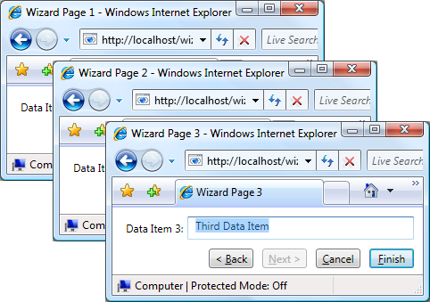
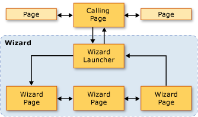
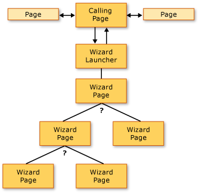
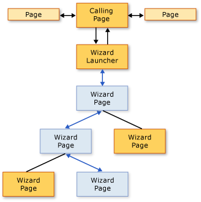
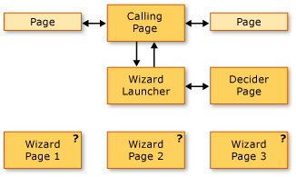
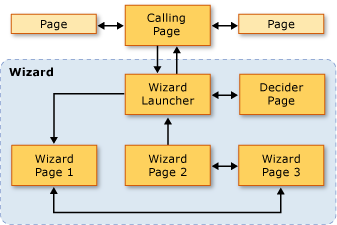

Общие сведения о топологии переходов
Данный обзор представляет введение в топологии навигации в WPF. Последовательно рассматриваются три общие топологии навигации с примерами.
Note
Перед прочтением этого раздела следует ознакомиться с концепцией структурной навигации в WPF с помощью страничных функций. Дополнительные сведения по этим темам см. в разделе Общие сведения о структурной навигации.
В этом разделе содержатся следующие подразделы.
Топологии навигации
В WPF, навигация обычно состоит из страниц (Page) с гиперссылками (Hyperlink), перейти на другие страницы, при щелчке. Посещенные страницы определяются по универсальные идентификаторы ресурсов (URI) (см. в разделе URI типа Pack в WPF). Рассмотрим следующий простой пример, показывающий страницы, гиперссылки и универсальные идентификаторы ресурсов (URI):
<Page xmlns="http://schemas.microsoft.com/winfx/2006/xaml/presentation" WindowTitle="Page1">
<Hyperlink NavigateUri="Page2.xaml">Navigate to Page2</Hyperlink>
</Page>
<Page xmlns="http://schemas.microsoft.com/winfx/2006/xaml/presentation" WindowTitle="Page2">
<Hyperlink NavigateUri="Page1.xaml">Navigate to Page1</Hyperlink>
</Page>
Эти страницы располагаются в топологии навигации структура которой определяется, как переходы между страницами. Эта конкретная топология навигации подходит для простых сценариев, хотя навигация может требовать более сложные топологии, некоторые из которых могут быть определены только при запуске приложения.
В этом разделе рассматриваются три общие топологии навигации: Фиксированная линейная, фиксированная иерархическая, и динамически создаваемого. Каждая топология навигации демонстрируется на примере, который имеет UI как показано на следующем рисунке:

Топологии структурной навигации
Существует два широко известных типа топологии навигации.
Фиксированная топология: определяется во время компиляции и не изменяется во время выполнения. Фиксированные топологии полезны для перехода по фиксированной последовательности страниц в линейном или иерархическом порядке.
Динамическая топология: определяется во время выполнения на основе входных данных, собираемых от пользователей, приложений или системы. Динамические топологии полезны в тех случаях, когда на страницы можно переходить в разных последовательностях.
Хотя возможно создание топологии навигации с помощью страниц, в примерах используются страничные функции, поскольку они предоставляют дополнительные возможности, которые упрощают поддержку передачи и возврата данных по страницам топологии.
Навигация при фиксированной линейной топологии
Фиксированная линейная топология является аналогом структуры мастера с одной или несколькими страницами, по которым можно переходить в фиксированной последовательности. На следующем рисунке показана высокоуровневая структура и поток мастера с фиксированной линейной топологии.

Типичные варианты поведения для навигации по фиксированной линейной топологии могут быть следующие.
Переход из вызывающей страницы на страницу средства запуска, которое инициализирует мастер и переходит к первой странице мастера. Страница запуска ( UI-меньше PageFunction<T>) не является обязательным, поскольку вызывающая страница может напрямую вызывать первую страницу мастера. Однако используя страницу средства запуска, можно упростить инициализацию мастера, особенно если инициализация сложна.
Пользователи могут переходить между страницами с помощью кнопок "Назад" и "Вперед" (или гиперссылок).
Пользователи могут переходить по страницам с помощью журнала.
Пользователи могут отменить работу мастера на любой странице, нажав кнопку "Отмена".
Пользователи могут принять работу мастера на последней странице, нажав кнопку "Готово".
Если мастер отменяется, то он возвращает соответствующий результат и не возвращает никаких данных.
Если пользователь принимает работу мастера, мастер возвращает соответствующий результат и возвращает собранные им данные.
По завершении мастера (принятия или отмены) страницы, которые составляли мастер, будут удалены из журнала. Это сохраняет каждый экземпляр мастера изолированным, тем самым позволяя избежать потенциальных ошибок данных или состояния.
Динамическая навигация при фиксированной иерархической топологии
В некоторых приложениях страницы позволяют осуществлять переход на две или более страниц, как показано на следующем рисунке:

Эта структура называется фиксированной иерархической топологией, и последовательность обхода иерархии часто определяется во время выполнения приложением или пользователем. Во время выполнения каждая страница в иерархии, позволяющая выполнять переходы на несколько страниц, собирает данные, необходимые для определения страниц для перехода. На следующем рисунке показано одно из нескольких возможных последовательностей переходов на основе предыдущего рисунка:

Несмотря на то, что последовательность переходов по страницам в фиксированной иерархической структуре определяется во время выполнения, взаимодействие с пользователем такое же, как в фиксированной линейной топологии.
Переход из вызывающей страницы на страницу средства запуска, которое инициализирует мастер и переходит к первой странице мастера. Страница запуска ( UI-меньше PageFunction<T>) не является обязательным, поскольку вызывающая страница может напрямую вызывать первую страницу мастера. Однако используя страницу средства запуска, можно упростить инициализацию мастера, особенно если инициализация сложна.
Пользователи могут переходить между страницами с помощью кнопок "Назад" и "Вперед" (или гиперссылок).
Пользователи могут переходить по страницам с помощью журнала.
Пользователи могут изменять последовательность навигации, если они перемещаются назад по журналу.
Пользователи могут отменить работу мастера на любой странице, нажав кнопку "Отмена".
Пользователи могут принять работу мастера на последней странице, нажав кнопку "Готово".
Если мастер отменяется, то он возвращает соответствующий результат и не возвращает никаких данных.
Если пользователь принимает работу мастера, мастер возвращает соответствующий результат и возвращает собранные им данные.
По завершении мастера (принятия или отмены) страницы, которые составляли мастер, будут удалены из журнала. Это сохраняет каждый экземпляр мастера изолированным, тем самым позволяя избежать потенциальных ошибок данных или состояния.
Навигация при динамически создаваемой топологии
В некоторых приложениях последовательность, в которой осуществляется переход на две или более страниц, может быть определена только во время выполнения пользователем, приложением или внешними данными. Следующий рисунок иллюстрирует набор страниц с неопределенной последовательностью навигации:

На следующем рисунке показана последовательность навигации, которая была выбрана пользователем во время выполнения:

Эта последовательность навигации называется динамически создаваемой топологией. Взаимодействие с пользователем такое же, как и в предыдущих топологиях навигации.
Переход из вызывающей страницы на страницу средства запуска, которое инициализирует мастер и переходит к первой странице мастера. Страница запуска ( UI-меньше PageFunction<T>) не является обязательным, поскольку вызывающая страница может напрямую вызывать первую страницу мастера. Однако используя страницу средства запуска, можно упростить инициализацию мастера, особенно если инициализация сложна.
Пользователи могут переходить между страницами с помощью кнопок "Назад" и "Вперед" (или гиперссылок).
Пользователи могут переходить по страницам с помощью журнала.
Пользователи могут отменить работу мастера на любой странице, нажав кнопку "Отмена".
Пользователи могут принять работу мастера на последней странице, нажав кнопку "Готово".
Если мастер отменяется, то он возвращает соответствующий результат и не возвращает никаких данных.
Если пользователь принимает работу мастера, мастер возвращает соответствующий результат и возвращает собранные им данные.
По завершении мастера (принятия или отмены) страницы, которые составляли мастер, будут удалены из журнала. Это сохраняет каждый экземпляр мастера изолированным, тем самым позволяя избежать потенциальных ошибок данных или состояния.